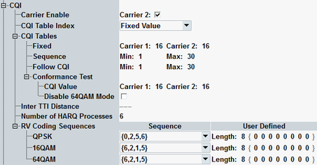

This section configures a CQI reporting test channel. The settings take effect when a connection with an HS-DSCH of this configuration type is set up, see "Configuration Type".

Enables or disables the usage of an additional carrier for data transport via the HS-DSCH.
This parameter is only visible while a multi-carrier scenario is active.
Option R&S CMW-KS404 required.
Remote command:Determine the downlink transport format of the CQI test channels. The settings refer to the CQI mapping tables defined in 3GPP TS 25.214, section 6A.2.3. Which of the tables is applied depends on the UE category, see "UE Category".
Each row of a mapping table can be identified via the CQI value listed in the first table column. Selection of a table row is done via this CQI value.
If a reference power adjustment is defined in the used table row, it reduces the HS-DSCH power. This reduction is compensated automatically by an increased OCNS power, so that the output channel power remains constant irrespective of the used CQI value.
Select one of the following values for "CQI Table Index" and configure the corresponding "CQI Tables" parameter.
Option R&S CMW-KS401 required.
- "Fixed Value": A fixed mapping table row is used. Parameter "Fixed" selects the CQI value of the row.
If a multi-carrier scenario is active, individual values can be set per carrier. - "Sequence": A range of mapping table rows is used. The used row changes cyclically from the minimum to the maximum CQI value configured via parameter "Sequence".
The sequence starts with the minimum CQI value. For each scheduled subframe the CQI value is increased by one, until the maximum value has been used. Then the sequence restarts with the minimum value. - "Follow CQI UL": The CQI value to be used is proposed by the UE. The parameter "Follow CQI" allows you to restrict the range of allowed CQI values.
If the minimum CQI is set to a larger value than the maximum CQI, then only the maximum value is allowed. - "Conformance Test": Use this value for CQI reporting tests with the HSDPA CQI measurement (see "HSDPA CQI Measurement Configuration"). The parameter "Conformance Test" defines the CQI value to be used in the first stage of the test. The downlink transport format is fixed and the distribution of the reported CQI values is monitored.
Also 64-QAM modulation can be enabled or disabled in conformance test mode. Option R&S CMW-KS403 is required for 64-QAM modulation.
Displays the minimum distance between two consecutive transmission time intervals in which the HS-DSCH is allocated to the UE (1 to 3 TTIs).
In accordance with the CQI test requirements, the inter-TTI distance is automatically set to 3 if "Conformance Test" is selected. Otherwise the inter-TTI distance depends on the UE category.
Option R&S CMW-KS401 required.
Remote command:Number of hybrid automatic repeat request processes for retransmission of HSDPA packets.
Option R&S CMW-KS401 required.
Remote command:Redundancy and constellation version coding sequences, defining the retransmission of HSDPA packets.
The format of a coding sequence is {Xrv,0, …, Xrv,N} for N retransmissions. The first value defines the initial transmission and each subsequent value defines one retransmission.
Each Xrv value is a 3-bit number, encoding two redundancy version parameters and for 16-QAM and 64-QAM modulation also a constellation version parameter. For details refer to 3GPP TS 25.212, sections 4.5.4 and 4.6.2.1.
In the first column, you can select a predefined sequence for each modulation scheme. Alternatively you can select "User Defined" and define the length of the sequence and the sequence itself in the second column. For length = n only the first n entries within the brackets are considered.
Option R&S CMW-KS401 required for QPSK and 16-QAM, R&S CMW-KS403 required for 64-QAM.
Remote command: